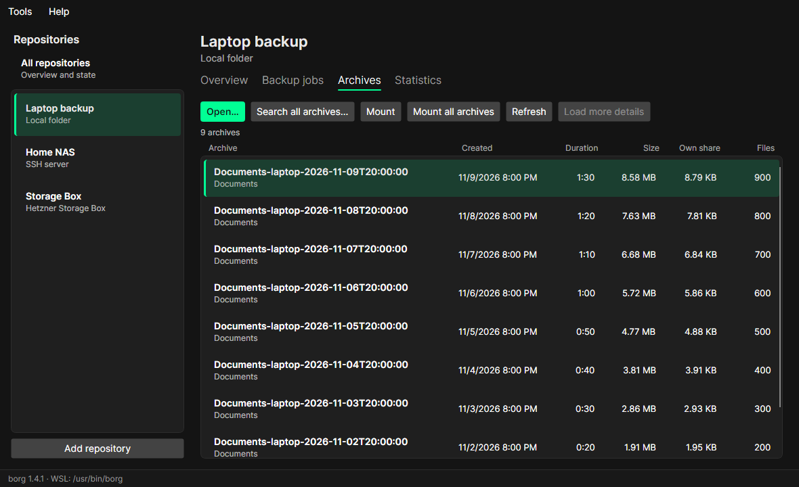
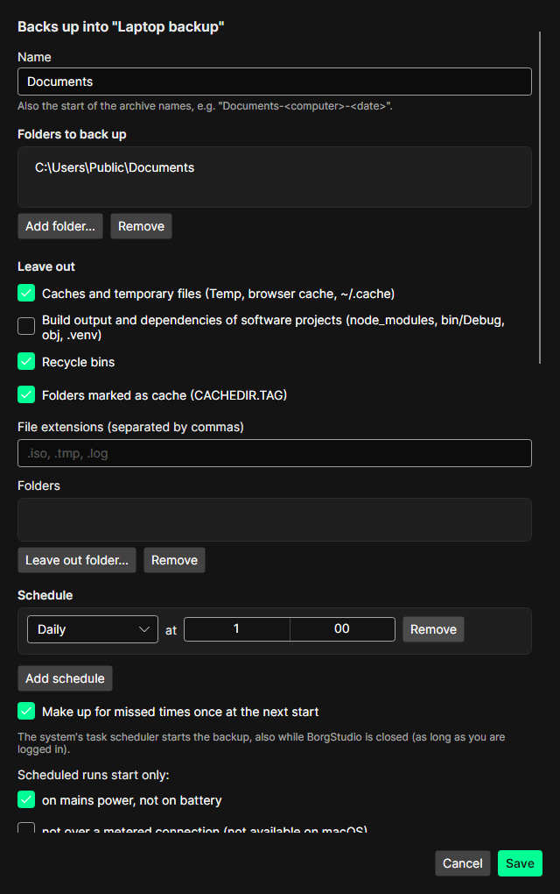
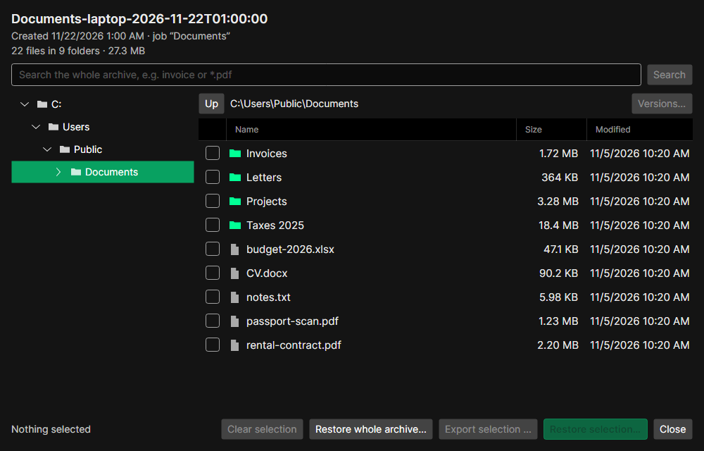
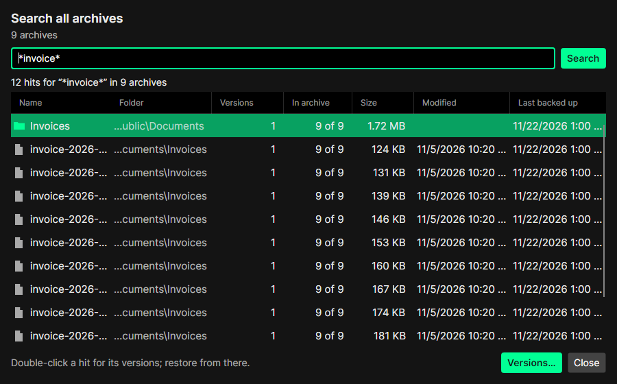
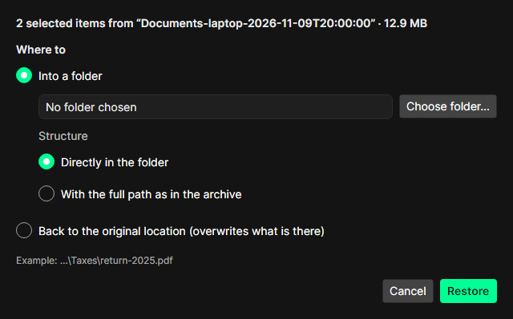
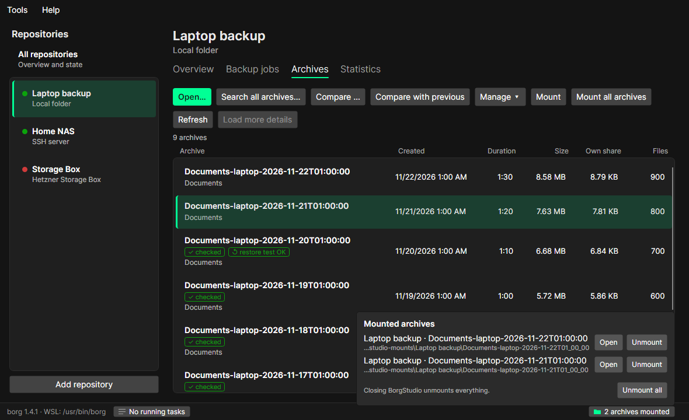
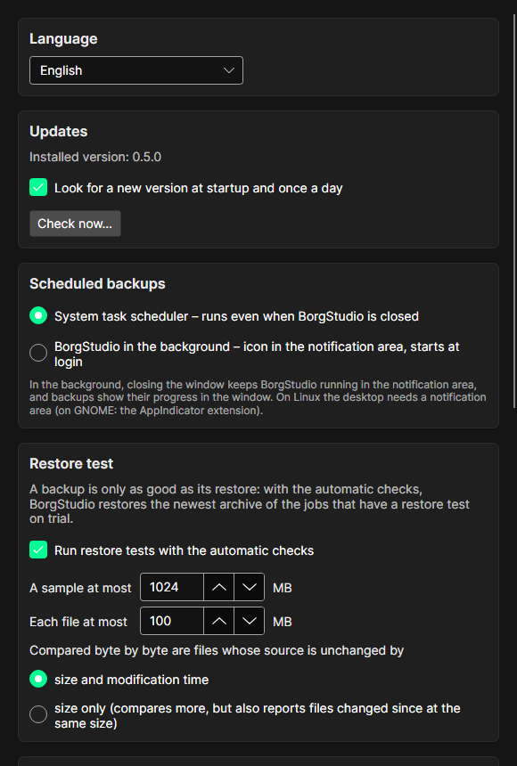

⇣
Small and fast after the first backup
borg deduplicates and compresses: unchanged data is never stored twice, so later backups upload only what is new – often a few megabytes.
Version –
BorgStudio is a desktop app for BorgBackup: deduplicated, encrypted backups to a disk, your own server or a Hetzner Storage Box – and every file back in a few clicks.
Windows · macOS · Linux — free, portable, no account.

BorgBackup is one of the most reliable backup tools there is. BorgStudio puts it into a window – with everything borg can do, and nothing you have to type.
borg deduplicates and compresses: unchanged data is never stored twice, so later backups upload only what is new – often a few megabytes.
Backups are encrypted on your machine. Passphrases and SSH keys live in a PIN-protected vault (Argon2id + AES-256) or your system keychain.
Browse any backup like a folder, search across all of them, see every version of a file – then restore it or simply open it.
No account, no cloud service of ours, no telemetry. Your backups go where you decide: a USB disk, your NAS, any SSH server or a Storage Box.
BorgStudio creates normal borg repositories. Connect the ones you already have, and keep using the borg command line whenever you like.
Unpack and start – the runtime is included. On Windows borg runs inside WSL. BorgStudio updates itself and checks every download.
Pick folders, leave out caches, build output and recycle bins with one click, choose the compression. While borg runs you see the upload speed and the remaining time; cancelling keeps a checkpoint.

Open any archive: folder tree on the left, files with size and date on the right, a search over the whole archive. Tick what you need and restore it.

Which backup still has the old spreadsheet? Search all archives at once by name or pattern (*.pdf) and see how a file changed over time – each version can be restored.

Into a folder of your choice or back to the original place. Before writing anything, BorgStudio checks what would be overwritten – and names files that changed after the backup.

Need just one file? Mount the archive – or the whole repository – and open it in Explorer, Finder or your file manager. Read-only, so nothing can go wrong.

An app lock with a PIN, an encrypted vault for passphrases and SSH keys, English or German, and updates from within the app – checked against the release's checksums before they are installed.

How people use BorgStudio – each in a few minutes.
Off-site backup
u123456 and backups/laptop.Local copy
D:\Backups\borg.lz4 compression – photos hardly compress anyway.Own hardware
Oops
budget.ods.Quick look
Moving
Unpack BorgStudio and install borg (on Windows inside WSL: sudo apt install borgbackup).
A local folder, an SSH server or a Storage Box – new or existing.
Create a job, click Back up now, done. Browse and restore whenever you need to.
Current version: – · What's new
Requires BorgBackup 1.2 or newer (1.4 recommended) – on Windows inside WSL. The .NET runtime is included.
Every release lists the SHA-256 checksums of its files in SHA256SUMS; the built-in updater checks them before installing.
No warranty: BorgStudio is free and comes without any warranty, as far as the law allows. A backup is only as good as its restore – try restoring from your backups now and then, and keep the passphrase and the repository key safe.
macOS: the app is not notarized by Apple. If macOS refuses to open it, allow it under System Settings → Privacy & Security → “Open Anyway”.
No. BorgStudio is free, and its source code is on GitHub. You only pay for storage you choose to rent, such as a Storage Box.
Yes. Connect them with their passphrase. Everything BorgStudio creates is a normal borg repository that the borg command line and other borg tools can read too.
Only to the repositories you add. To look for updates it asks GitHub's public release list. There is no account and no telemetry.
Then the backups cannot be decrypted – by anyone. Write the passphrase down and export the repository key; BorgStudio offers this right after creating a repository.
Not yet – they are the next big feature. Until then, start backups with one click.
No. BorgStudio is a free, private project and comes without warranty or support obligations. It runs the well-proven borg underneath, but please test restoring your backups regularly – that is the only way to be sure.
borg itself does not run on Windows. Inside WSL it runs as on Linux; BorgStudio handles the paths, so your Windows folders show and restore as C:\….